Day 1
What is AI:
- Machine think like human
- Machine think rationally
Thinking and acting like humans
Model cognitive functions of humans
- Humans only example of intelligence
Turing test: use operational definition => consider intelligent when can’t tell between computer or human
Downside:
- don’t have detailed model of people’s mind yet
- trickey/lying involved
Thinking and acting rationally
- Rationally: abstract ideal of intelligence
- Syllogism: argument structures that always yield correct conclusions given correct premises => logic + probabilistic reasoning
- Correct reasoning is enough?
- AI as building agents: artifacts that are able to think and act rationally in their environments
- Rationality more cleanly defined than humans
- Agents can: answer query, plan actions, solve complex problems
What is an agent (does not need all)
- Situated in an environment
- Make observations
- Able to act
- Has goals or preferences
- Prior knowledge or beliefs, way to update beliefs based on new experiences
Day 2
What do we need to represent
- Environment/world
- states/possible worlds
- how the world works => rules
- Constraints
- Casual relationships
- Action preconditions and effects
Corresponding reasoning tasks and problems
- Constraint satisfaction (static): find a state that satisfies some set of constraints
- Answering queries (static)
- Is a given proposition true/likely given what is known
- Planning (sequential): choose actions to reach goal state or maximize utility
Representation And reasoning system
- Sensing uncertainty => can agent fully observe current state of world or is there uncertainty in what we observe
- Effect uncertainty => does agent know for sure what the immediate effects of its action are on the environment (and/or on its status within the environment)
- Deterministic => no uncertainty , yes to both above points
- Otherwise stochastic
- Chess vs poker
- Chess is deterministic, poker is stochastic
Deterministic vs. stochastic domains
- AI used to be: logic vs probability
Explicit states, features, propositions, relations
- Explicitly enumerate states of the world
- State can be described using its features
- natural
- States can be described in terms of objects and relationships
- feature/proposition for each relationship on each possible tuple of individuals
- One binary relation Like(x,y) and 9 individuals => 2^81
- 9 => x, 9 => y
Flat vs. hierarchical
- One level of abstraction => flat
- Multiple levels of abstraction => hierarchical
Knowledge given vs knowledge learned
- Agent is provided with model of the world once and for all
- Agent can learn about world
Set of valid states vs set of possible states => header to get valid states
Features => propositions we can generate
Goals vs complex preferences
- State the agent wants to be in
- Proposition agent wants to make true
- Agent may have preferences
- There is some preference/utility function that describes how happy the again is in each state of the world
- preferences can be complex
Search => preliminary approach to deterministic problems
Simple planning agent
- Deterministic, goal driven agent
- Initially in start state
- Given goal
- Agent perfectly nows
- What actions can be applied in any given state
- The state it will end up in
- The sequence of actions is the solution
Midterm 1
Lecture 1
- Problem: static vs sequential
- Static: Constraint satisfaction
- Answering queries
- Sequential: planning
- Static: Constraint satisfaction
- Environment: deterministic vs stochastic
- Intelligence
- Turing test: operational definition: people can’t tell computer apart from people
- Rationality: abstract ideal of intelligence
- Syllogisms: logic/probabilistic reasoning
- Agent
- Situated in an environment
- Make observations
- Able to act
- Goals or preferences
- May have prior knowledge, and way of updating beliefs
Lecture 3
- Different representational dimensions of problems
- Need to represent
- environment/world
- How the world works
- Constraints
- Casual relationships
- Actions preconditions/effects
- Need to represent
- Size of state space
- R&R: representation (language) and (reasoning) procedures
- Deterministic (yes to both below) vs stochastic domains
- Sensing uncertainty: fully observe current state
- Effect uncertainty: know direct effects of its actions
Lecture 4
- Simple agent
- Deterministic, goal-driven agent
- Given a goal
- Agent knows
- What actions will be applied in any given state
- The state it will end up in when takes an action
- Search space graph
- Search procedure
- Generic search algorithm
- Frontier: collection of paths
- How to get different kinds of search
- The way in which the frontier is expanded defines the search strategy
- Generic search algorithm
Lecture 5
- Complete: when a solution exists the algorithm will find it
- Optimal: returns the best solution when there is no solution
Algorithms
- DFS:
- frontier as a stack
- Not complete and not optimal (may get stuck in cycle)
- Time complexity: O(b^m)
- Space complexity: O(bm)
- Good when space is limited
- Bad for shallow solutions
- BFS:
- Frontier as queue
- Complete, optimal if ignoring path costs
- Time complexity: O(b^m)
- Space complexity: O(b^m)
- Bad if space a problem
- IDS:
- Complete, optimal if ignoring path costs
- Time complexity: O(b^m)
- Space complexity: O(bm)
- Recompute elements of frontier rather than saving them
- Use DFS and keep increasing the depth of searching
- LCFS:
- Priority queue ordered by path cost
- Complete when path costs are positive
- Optimal when path costs positive
- Time complexity: O(b^m)
- Space complexity: O(b^m)
- BestFS:
- Select path whose end is closest to a goal according to heuristic
- Priority queue ordered by h -> greedy
- Not complete
- Not optimal
- Time complexity: O(b^m)
- Space complexity: O(b^m)
- A*:
- f(p) = lowest(cost(p) + h(p))
- Priority queue ordered by f(p)
- Time complexity: O(b^m)
- Space complexity: O(b^m)
- Complete if arc costs positive, optimal
- Optimal if: branching is finite, arc costs are positive, h(n) is underestimate
- Optimal efficiency: among all optimal algorithms that start from the same start node and use same heuristic h, A* expands the minimal number of paths
- B&B:
- Use DFS, but keep searching for shorter/lower cost solution if find solution
- If f(p) >= UB, discard p without expanding
- Time complexity: O(b^m)
- Space complexity: O(bm)
- Not complete in general but optimal (not optimal efficient)
- IDA*
- DFS but to fixed bound
- If dont find solution with given iteration of IDA*, update bound with lowest f-value that passed the prev bound and try again
- Complete, not optimal
- Time complexity: O(b^m)
- Space complexity: O(bm)
- MBA*
- Updating the heuristic for an ancestor of multiple paths ^^^
- Time complexity: O(b^m)
- Space complexity: O(b^m)
- Optimal, complete
Lecture 6
Lecture 7
- Heuristic: estimate of minimum distance/cost from each node to goal node
- Construct admissible heuristics
- Never an overestimate of the minimum cost from n to a goal
- Lower bound
- Make problem extremely easy to solve
- Verify heuristic dominance
- h2 > h1, h2 is better because its bigger and so closer to actual value
- Combine admissible heuristic
- h = max(h_1,h_2) also admissible and dominates both h_1 and h_2
Lecture 8
Lecture 9
- Cycle checking: prune a path that ends on node already in path
- Cannot remove optimal solution
- Dynamic programming:
- Build of table of dist(n) - dist(n) is actual cost of lowest cost path from node n to goal g 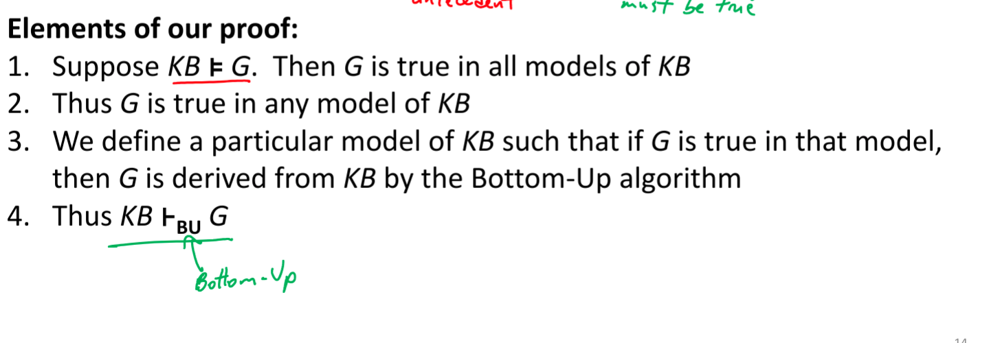
Lecture 10
- Variables
- Number of possible worlds: product of cardinality of each domain
- Always exponential in number of variables
- domain^variables
- Constraints
- Unary
- kary
- CSP
- Consists of set of variables, domain for each variable, set of constraints
Lecture 11
- Generate and test
- Brute force, generate all possible worlds one at a time and test for violations
- Runtime: number of world
- Can solve any CSP
- Search
- Every solution at depth n, heuristic not useful
- Search space: finite without cycles
- DFS with pruning
- Efficiency depends on order in which variables assigned values -> degree heuristics
- Consistency
- Prune domain as much as possible before searching
- Constraint network
- Arc consistency
- An arc <X, r(X,Y)>: for each x in dom(X), there is a y in dom(Y) such that r(x,y) satisfied
- Remove value in domain if not satisfied
Lecture 12
- Arc consistency algorithm
- Order of considering arcs does not affect final output
- May need to prune variable domain to make arc consistent
- Max number of constraints for binary: (n*(n-1))/2 (n variables)
- How many times same arc inserted into todoarc list: d (number of elements)
- How many steps to check consistency of arc: d^2
- Constraints: O(n^2)
- Overall time complexity: O(n2d3)
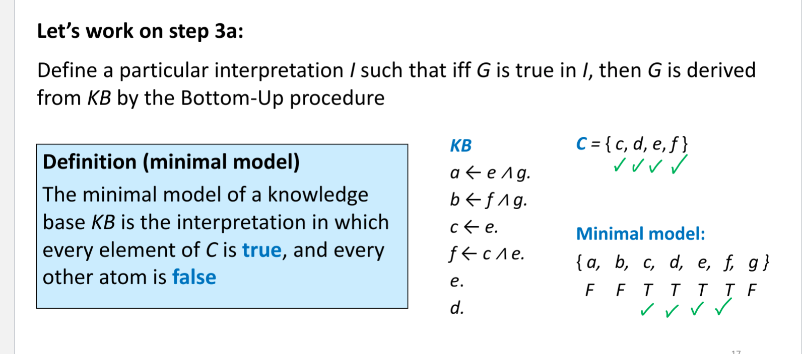
- Domain splitting
- When domains have more than one value
- Apply DFS with pruning
- Split the problem into two or disjoint cases
- Set of solutions is union of solution sets
- Need to keep around many constraint networks
- When domains have more than one value
Midterm 2
Lecture 13
- Local search on CSP
- Start from possible world
- Generate some neighbors
- Move to neighbor and repeat steps
- No frontier
- Constrained optimization
- Interactive best improvement: select neighbor that optimizes some evaluation function -> minimum number of constraint violations
- Scoring function to solve CSP by local search through greedy descent or hill climb
- Hill climb: maximizes value based function
- Greedy descent: minimize cost based function
- Problems: local maxima, plateaus and shoulders
Lecture 14
- Stochastic local search
- Alternate between
- Hill climbing
- Random steps
- Random restart
- Random steps:
- One step: choose (variable, value) pair
- Two step: pick variable then value
- Good in local settings, repair with minimum number of changes
- No guarantee to find solution even if one exists can stagnate
- Very hard to analyze
- Not able to show no solution exists
- Alternate between
- Comparing SLS algorithms
- SLS algorithms are randomized
- Taken time to solve problem is random variable
Lecture 15
- Tabu list
- Maintain a tabu list of the k last nodes visited
- Simulated annealing
- Change degree of randomness over time
- Start high then low
- If n’ better than n move, otherwise move maybe depending on temperature
- Higher the T, more likely to move to n’ if it is worse than n
- If T decreases slowly enough, then simulated annealing search will find a global optimum with probability approaching 1
- Change degree of randomness over time
- Beam search
- Maintain popular of k individuals
- Parallel search:
- Running k random restarts in parallel rather than in sequence
- Choose best k out of all the neighbors
- Non stochastic beam search: lack of diversity
- Stochastic: selects k individuals at random but probability of selection proportional to their value h(n)
- Genetic algorithm
- Start with k randomly selected individuals
- Fitness function
- Successors generated by combining two individuals
- Selection
- Crossover
- Mutation
- Slow
Lecture 16
- State: full assignments
- Goal: agent wants to be in possible world where some variables are given specific values
- Successor function
- Actions take agent from one state to another
- Solution
- Sequence of actions that take agent from current state to goal state
- STRIPS
- Action has
- Precondition:
- Set of assignments to features that mush be satisfied in order for action to be legal
- Effects
- Set of assignments to features that are caused by the action
- All features not explicitly set by action stay unchanged
- Forward planning
- States are possible worlds
- Arcs represent actions that are legal in state s
- Possible actions are those preconditions are satisfied in s
- Plan is path from the state representing the initial state to a state that satisfies the goal
Lecture 17
- Heuristic for forward planning
- Estimate of distance (cost) from a state to the goal
- (number of actions)
- Features are binary
- goals/preconditions can only be assignments to T
- Most sense as admissible heuristic: number of unsatisfied goals -> remove all negative effects
- Removing preconditions (trivialize)
- Assuming no action can achieve more than one goal (inadmissible)
- Empty-delete list
- Remove all effects that make variable false -> emptying the delete list
- Solve simplified planning problem
- Planning as CSP
- Unroll the plan for fixed number of steps -> horizon
- With a horizon of k
- Construct CSP variable for each STRIPS variable at each time step from 0 to k
- Construct boolean CSP variable for each STRIPS action at each time step from 0 to k-1
- Construct CSP constraints corresponding to start and goal values, as well as preconditions and effects of actions
- Initial constraints: constrain state variables at time 0
- Goal constraints: constrain state variables at time k
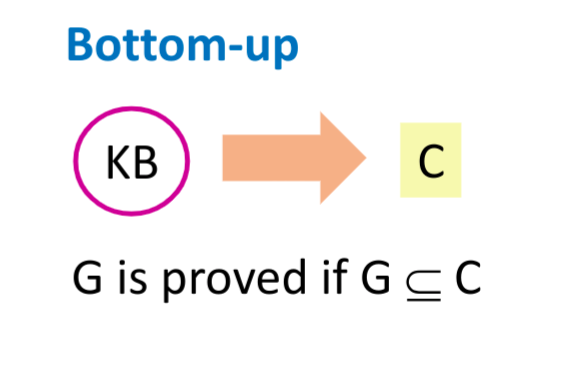
- Actions cannot simultaneously (action constraint)
- Mutual exclusion
- State constraint
- Hold between variables at the same step
- Capture physical constraints
- CSP returns shortest solution
Lecture 18
- Atom: symbol starting with lowercase letter
- Body is atom or is of form b^b
- Definite clause is atom or rule of the form h <- b
- Knowledge base: set of definite clauses
Lecture 19
- Interpretation assigns a truth value to each atom
- A possible world
- b1 ^ b2 is only true of b1 is true in I and b2 is true in I
- Rule h <- b is false in I only if b is true in I and h is false in I
- Knowledge base KB is true in I if and only if every clause in KB is true in I
- Model of a set of clauses (a KB) is an interpretation in which all the clauses are true
- If KB is a set of clauses and G is a conjunction of atoms, G is a logical consequence of KB, written KB |= G, if G is true in every model of KB
- If KB true then G true
- G logically follows from KB
- KB entails G
- No interpretation in which KB is true and G is false
- To prove KB |= G
- Collect of models of KB
- Verify that G is true in all those models
- O(2^n) time
- Soundness: if KB |- G implies KB |= G (G can be derived from my proof)
- Completeness: if KB |= G implies KB |- G
- Bottom up proof
- If h <- b1 ^ b2 ^ b3 is a clause in the knowledge base, and each bi has been derived, then h can be derived
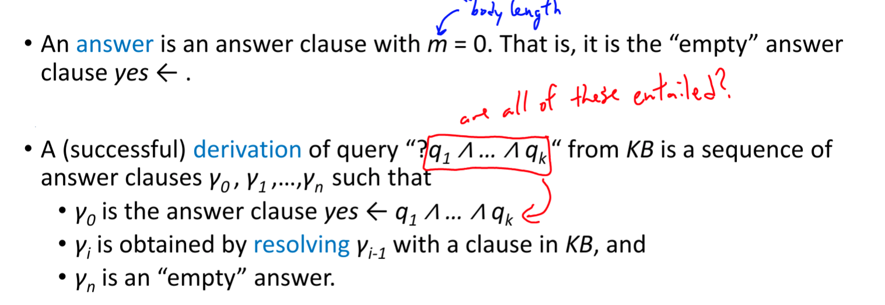
Lecture 20
- Given domain with n propositions, you have 2^n interpretations
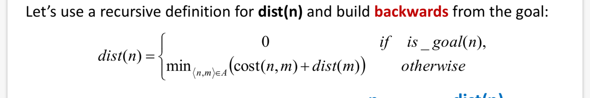
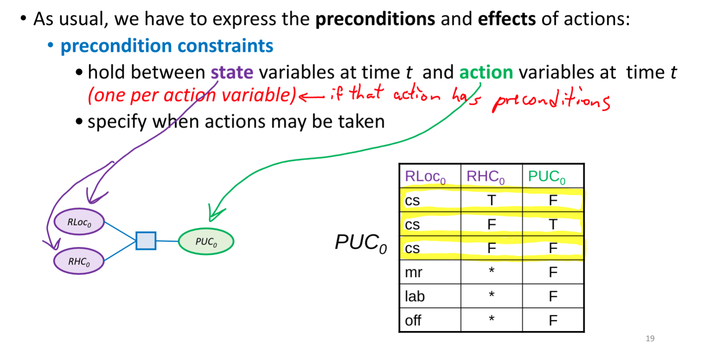
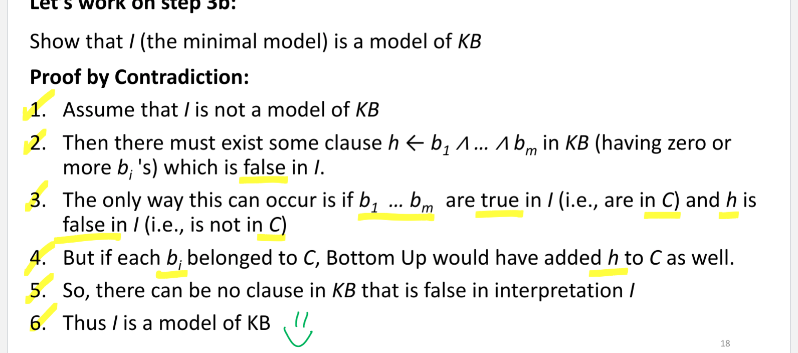
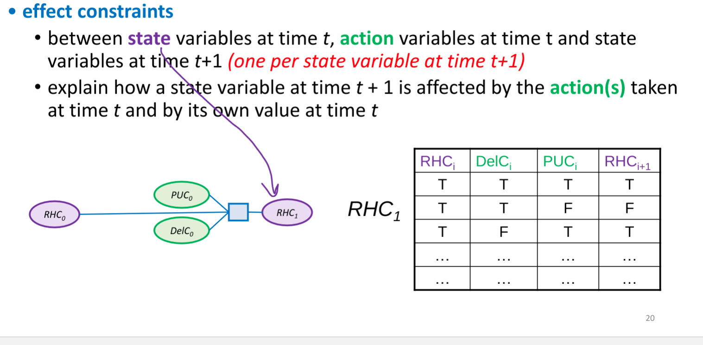
Lecture 21
- Sound: never wrong
- Complete: doesn’t miss anything
Top down proof example
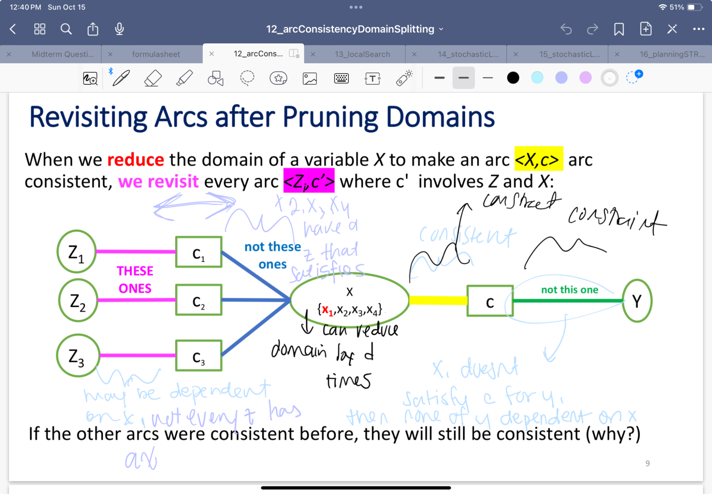
- BU looks at query G at the end
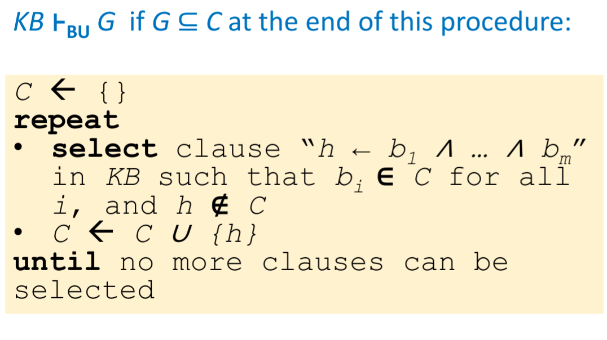
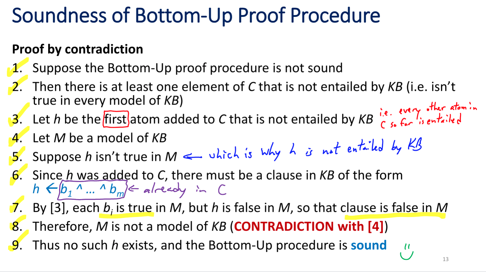
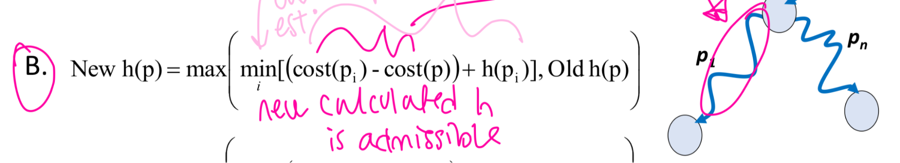
Lecture 22
- Heuristic for clause selection
- Number of unique atoms in KB clause body
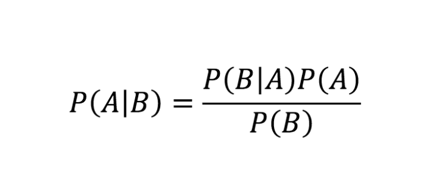
- Variable: symbol starting with an uppercase letter
- Constant: symbol starting with a lower-case letter or a sequence of digits
- Term: either a variable of a constant
- Predicate symbol: symbol starting with a lower-case letter
- Atom: symbol of form p or p(t1…tn)
- Definite clause: h <- b1…bm
- Knowledge base: set of definite clauses
Lecture 23
- Domain of random variable X is set of values X can take
- Values are mutually exclusive and exhaustive
- Possible worlds are mutually exclusive and exhaustive
- Joint probability distribution
- Can compute probability distribution of any variable
- Can compute probability distribution for any combination of variables
- Can update these probabilities
Lecture 24
- Probabilistic conditioning
- update/revise beliefs based on new information
- Build probabilistic model using background information -> prior information
- Posterior probability of h: P(h|e) -> probability of h given e
- Computing conditional probability
- When some worlds are ruled out, others become more likely
- Must normalize new world’s probability
- Old probability / probability evidence
- P(h^e)/P(e) = P(h|e)
- When some worlds are ruled out, others become more likely
- Conditional probability table: each row sums to 1
- Is a set of distributions
- Product rule
- P(x1,x2) = P(x2)(Px1|x2) = P(x1)P(x2|x1)
- Communitive
- P(x1, x2, …, xn) = P(x1…xt, xt+1,…xn) = P(x1…xt) P(xt+1…xn | x1…xt)
- P(x1,x2) = P(x2)(Px1|x2) = P(x1)P(x2|x1)
- Chain rule

- Using conditional probability for inference
- Often have casual knowledge -> P(symptom | disease)
- Want evidential reasoning -> P(disease | symptom)
- In general P(hypothesis | evidence)
- bayes rule
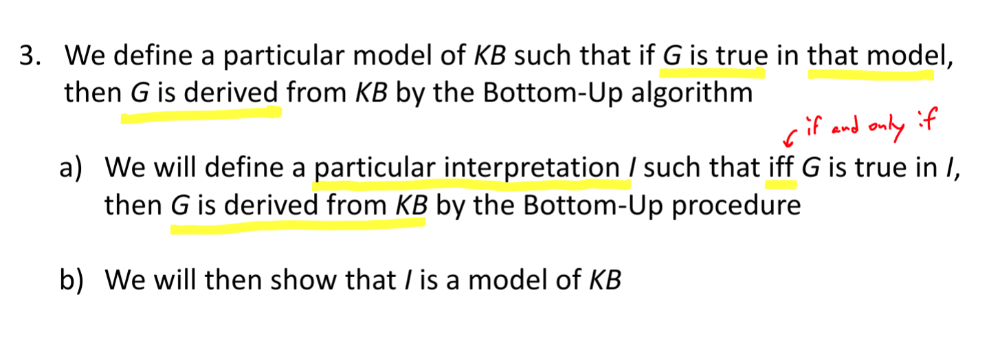
Lecture 25
- Marginal independence
- A variable x is marginally independent of random variable Y if P(x|y) = p(x)
- P(X|Y) = P(X)
- P(Y|X) = P(Y)
- P(X,Y) = P(X)P(Y)
- Conditional independence
- Each event caused by the same event, but neither event has a direct effect on the other
- Two variables might not be marginally independent, but can become independent when we observe some third variable
- P(X|Y,Z) = P(Y|Z)
- Knowledge of Y’s value does not affect your belief in the value of X, given a value of Z
- If we don’t know Z, Y and X effect each other, otherwise they don’t/q
- P(X, Y,Z) = P(X|Z)
- P(Y, X,Z) = P(Y|Z)
- P(X,Y|Z) = P(X|Z)P(Y|Z)
- Joint probability distribution: O(d^n) values
- But they have to sum to 1
- Need to store all but 1
- Conditional probability table O(d^n) values
- But each row has to sum to 1 (set of distributions)
- Need to store all - (num rows)
- Ignore a column
- Conditional independence use
- Write out full JD using chain rule
- Reduce JD from exponential in n to linear in n (n is # of variables)
- Most basic and robust form of knowledge about uncertain environments
- Big picture
- JPD specified probability of every world
- Reduce the size with independence (rare) and conditional independence (frequent)
- JPD specified probability of every world
Lecture 27
- Belief networks
- Order reflects causal knowledge (causes before effects)
- Apply chain rule
- Simplify according to marginal and conditional independence
- Express remaining dependencies as a network
- Each variable a node
- For each variable, conditioning variables are its parents
- Associate with each node the corresponding conditional probabilities
- Result is DAG
- Bnet inference types
- Diagnostic: know the result
- Predictive: know cause
- Inter-causal: one possible cause and effect
- Mixed:
- Bnet compactness
- O(n2^k) for n variables and each variable has no more than k parents